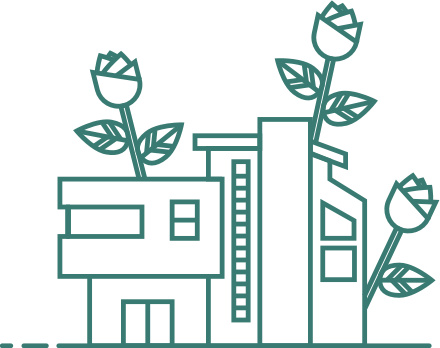

The Living Building
A flower … one of nature’s most perfect expressions of beauty, elegance and efficiency.
What if a building could be like a flower? Operate just as elegantly and efficiently, be just as beautiful?
A flower … one of nature’s most perfect expressions of beauty, elegance and efficiency.
What if a building could be like a flower? Operate just as elegantly and efficiently, be just as beautiful?

The Center for Sustainable Landscapes strives to do just that: to blur the line between the built and natural environments, and demonstrate the beauty of living in harmony with the natural world.
How can a building operate as elegantly and efficiently as a flower?
Explore the different locations of the CSL!
Use this guide to learn about the hidden stories of the CSL.